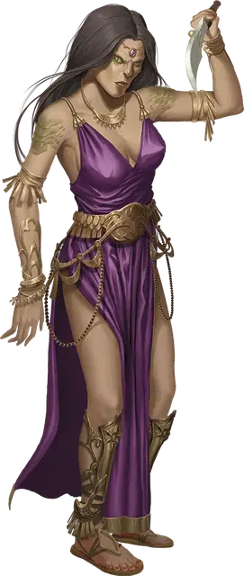

Чистокровная юань-ти
Yuan-ti Pureblood
Средний Гуманоид (Юань-ти), нейтрально-злой

Класс Доспеха 11
Хиты 40 (9к8)
Скорость 30 футов
| мод | спас | ||
|---|---|---|---|
| СИЛ | 11 | +0 | +0 |
| ЛОВ | 12 | +1 | +1 |
| ТЕЛ | 11 | +0 | +0 |
| мод | спас | ||
|---|---|---|---|
| ИНТ | 13 | +1 | +1 |
| МДР | 12 | +1 | +1 |
| ХАР | 14 | +2 | +2 |
Навыки Восприятие +3, Обман +6, Скрытность +3
Иммунитет к урону яд
Иммунитет к состояниям отравление
Чувства тёмное зрение 60 футов, пассивное Восприятие 13
Языки Общий, Бездны, Драконий
Опасность 1 (200 опыта)
Бонус мастерства +2
Среда обитания Болото, Город, Лес, Пустыня
Особенности
Врождённое колдовство. Базовой характеристикой юань-ти является Харизма (Сл спасброска от заклинания 12). Она может накладывать следующие заклинания, не нуждаясь в материальных компонентах:
• Неограниченно: дружба с животными [animal friendship] (только змеи);
• 3/день каждое: внушение [suggestion], ядовитые брызги [poison spray].
Сопротивление магии. Юань-ти совершает с преимуществом спасброски от заклинаний и прочих магических эффектов.
Черты. Вы можете изменять юань–ти, давая им одну или больше нижеследующих черт.
Вариант: Меняющий форму. Этот юань–ти может потратить действие и превратиться в Среднего размера гигантскую ядовитую змею [giant poisonous snake] или в Большую змею–удава[constrictor snake], или обратно в истинную форму. Его характеристики неизменны за исключением размера, как указано выше. Любое снаряжение, надетое или несомое, не трансформируются. После смерти форма не изменяется.
Вариант: Шкура хамелеона. Юань–ти обладает преимуществом на проверки Ловкости (Скрытность), делаемые, чтобы спрятаться.
Вариант: Сбрасываемая кожа (1/день). Этот юань–ти может сбрасывать свою кожу за бонусное действие, чтоб освободить себя от захвата, кандалов, или другого типа опутывания. Если юань–ти тратит 1 минуту на поедание своей сброшенной кожи, он восстанавливает количество хитов, равное половине его максимальных хитов.
Вариантные действия. Нижеследующие действия разрешены только для определенных видов юань–ти.
Вариант: Укус. Рукопашная атака оружием: +3 к попаданию, досягаемость 5 футов, одно существо. Попадание: 3 (1к4) колющего урона плюс 3 (1к6) урона ядом. Если чистокровный использует Мультиатаку, он может совершить две атаки, но из них атака укусом может быть только одна.
Действия
Мультиатака. Юань-ти совершает две рукопашные атаки.
Скимитар. Рукопашная атака оружием: +3 к попаданию, досягаемость 5 футов, одна цель. Попадание: Рубящий урон 4 (1к6 + 1).
Короткий лук. Дальнобойная атака оружием: +3 к попаданию, дистанция 80/320 футов, одна цель. Попадание: Колющий урон 4 (1к6 + 1) плюс урон ядом 7 (2к6).
Описание
Чистокровные образуют низшую касту в обществе юань-ти. Они очень похожи на людей, но при тщательном осмотре разница заметна, потому что у них всегда есть какие-то намеки на их истинную природу, как, например, чешуйчатые пятна на руках, змеиные глаза, заостренные зубы или раздвоенный язык. Надевая накидки и капюшоны, они притворяются людьми и просачиваются в цивилизованные земли для сбора информации, похищений заключенных ради допроса и жертвоприношения, и для торговли с теми, у кого есть что-то, что может помочь воплощению их бесчисленных планов.
См. дополнительно статью: "Бестиарий: Юань-ти"